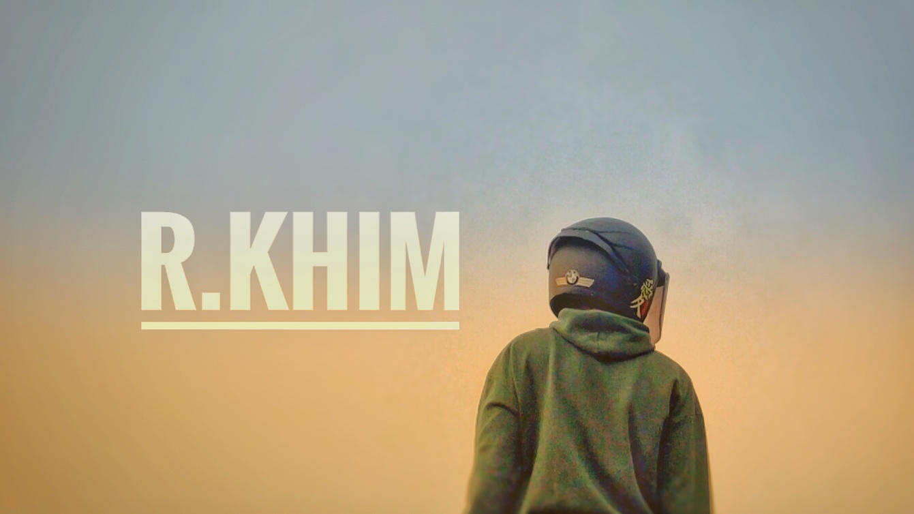

About Me

Tahniah, hello guys kenalin aku rokhim you can call me khim or evrything you want, ok, and born in little big city i call that malang, tau kan? ituloh kota yang di juluki singa dengan club bolanya aremania dan balik lagi ke topik guys, aku tertarik dengan dunia drone because aku memang suka dengan sesuatu yang berbau visual and yup salah satunya videography dan drone adalah bagian dari visual yang ku maksud, dan kenapa aku pilih drone?, banyak sudut pandang dan angel dalam dunia visual, dan ternyata aku sekecil itu kalau di lihat dari atas btw🗿.
And benefit yang aku dapetin dari mengarung dunia drone, banyak juga kok mulai dari melihat sesuatu dari sudut pandang yang mungkin jarang orang lihat, mengabadikan moment moment indah yang memang terlihat lebih sempurna if i take it from above dan yang pasti ilmu baru tentang dunia teknologi sekaligus penerbangan drone, dan untuk portfolio ini, hanya sebuah wadah untuk mengabadikan moment indah yang ku dapat, and maybe someone want to take a picture with me ?, hahaha.